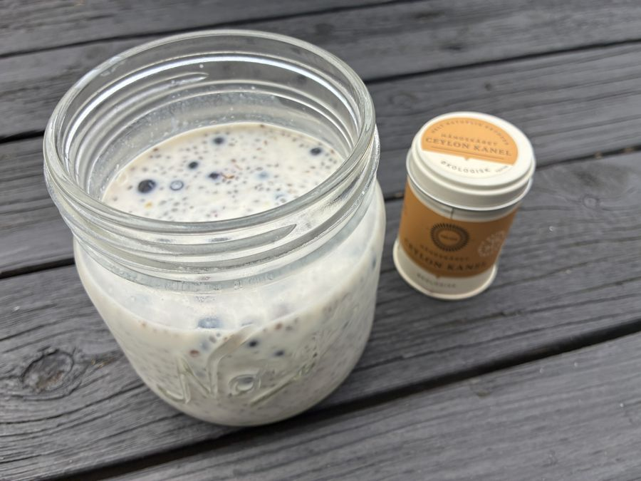
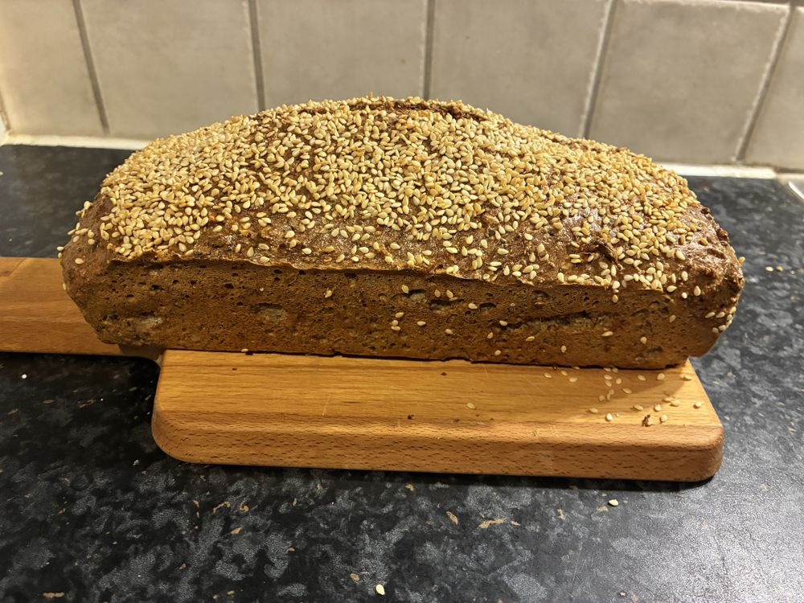
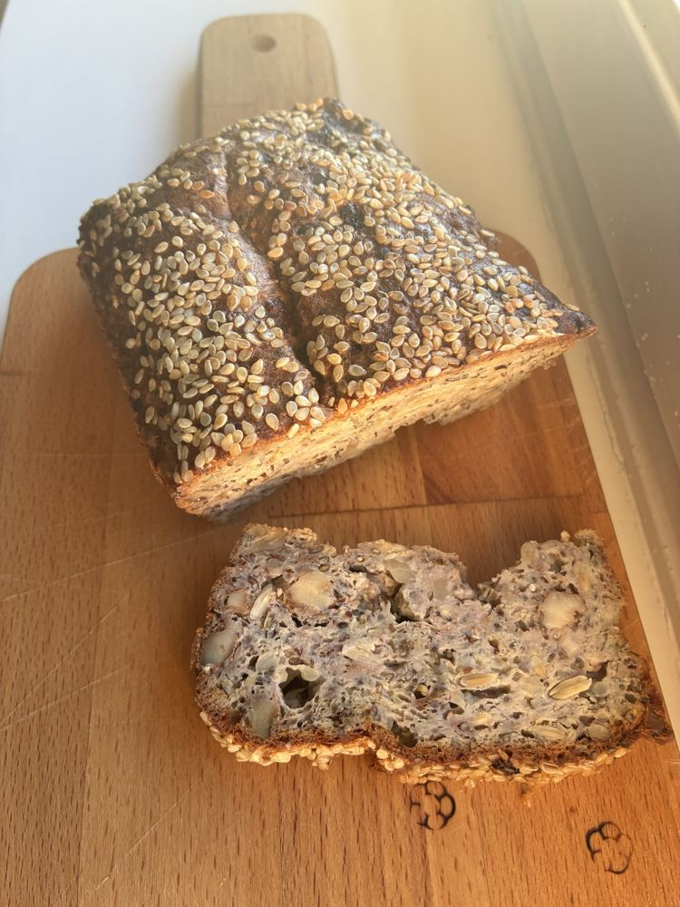
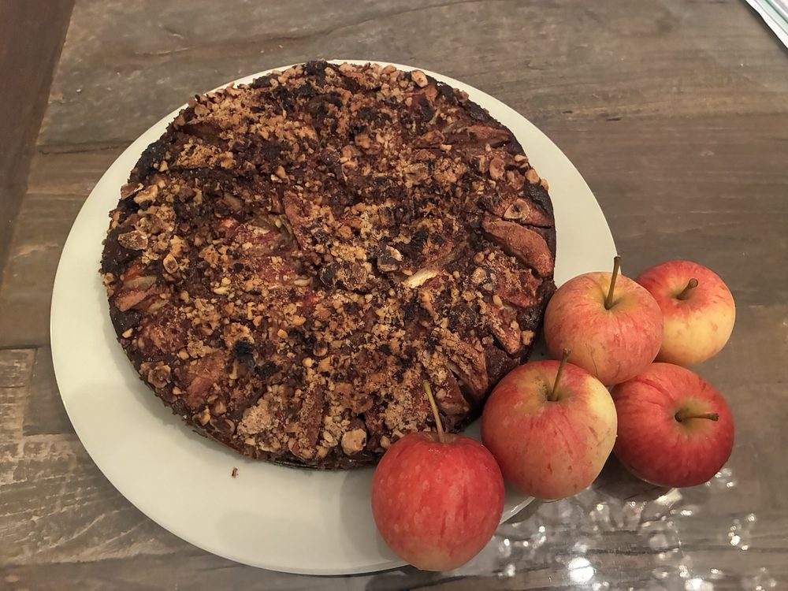
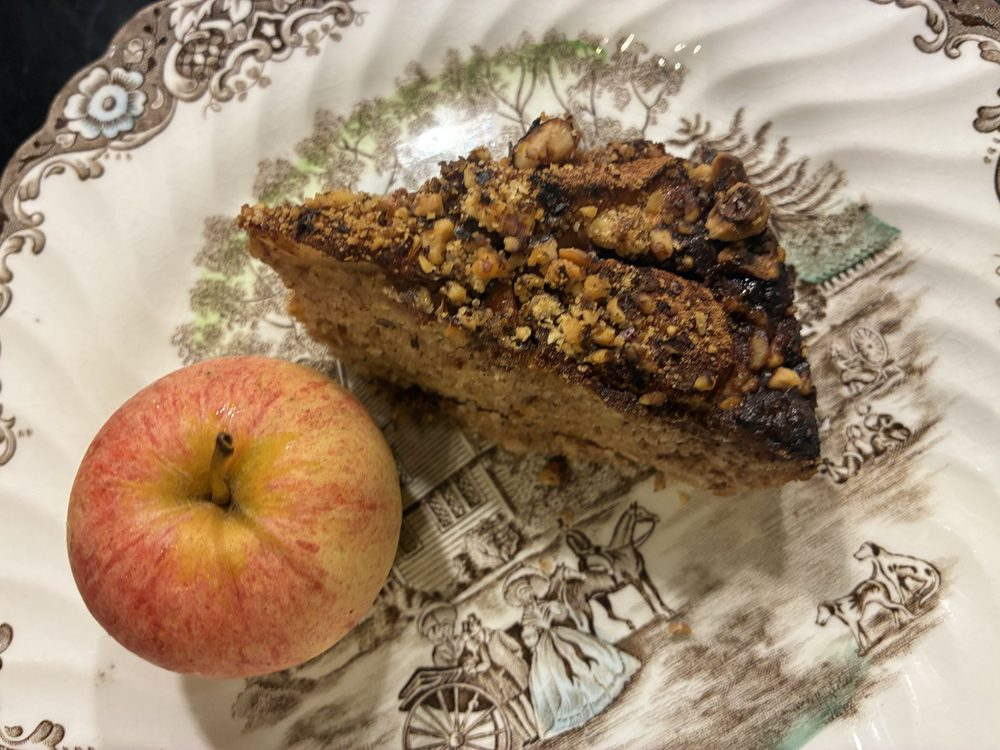

Kosthold
Enkle, mettende hverdagsoppskrifter

En god og mettende start på dagen, som tar to minutter å lage kvelden før. Grøten er full av fiber og gode fettsyrer, og holder deg mett lenge.
Blir grøten for tykk, rører du inn en skvett drikke til. Du kan gjerne lage 2–3 glass på en gang. De holder seg fint i kjøleskapet i 2–3 dager.
Mye fiber: Chiafrø, linfrø og loppefrøskall gir til sammen rundt 15 g kostfiber, altså omtrent halvparten av det du trenger på en hel dag. Fiber gir god metthet, en jevnere blodsukkerkurve og er bra for fordøyelsen og tarmfloraen.
Loppefrøskall består nesten bare av løselig fiber: 1 ss (ca. 4 g) gir rundt 3,5 g kostfiber. Fiberen danner en gel som gjør grøten tykk, bidrar til en normal tarmfunksjon og kan bidra til å holde kolesterolnivået i blodet normalt.
Plantebasert omega-3: Chiafrø og linfrø er blant de rikeste kildene til plantebasert omega-3 (alfa-linolensyre). En porsjon gir rundt 5–6 g, mer enn det anbefalte daglige inntaket. Linfrøene bør være knuste, ellers passerer de ofte ufordøyd gjennom tarmen.
Protein: Skyren eller proteinyoghurten og frøene gir rundt 13–14 g protein. Vil du ha enda mer, kan du øke mengden.
Skyr eller proteinyoghurt? Naturell skyr og kesam har omtrent like mye protein som proteinyoghurt, men består bare av melk og kultur. Proteinyoghurt med søtstoff og tilsatt fiber regnes som ultraprosessert. Den er likevel et godt valg med lite sukker, så velg det du liker best. Naturell skyr med vaniljefrø er alternativet som er minst bearbeidet.
Blåbær og kanel gir smak, farge og antioksidanter. Ceylon-kanel inneholder mye mindre kumarin enn vanlig kassiakanel, og passer derfor godt når du bruker kanel hver dag.
| Med mandeldrikk (usøtet) | Med havredrikk | |
|---|---|---|
| Energi | ca. 270 kcal | ca. 350 kcal |
| Karbohydrat | ca. 8 g | ca. 25 g |
| Kostfiber | ca. 16 g | ca. 17 g |
| Protein | ca. 13 g | ca. 14 g |
| Fett | ca. 15 g | ca. 16 g |
| – hvorav omega-3 | ca. 5–6 g | ca. 5–6 g |
Valget av drikk utgjør den største forskjellen. Havredrikk inneholder naturlig sukker fra havren, rundt 15–17 g karbohydrater i 2,5 dl. Usøtet mandeldrikk har nesten ingen karbohydrater. Vil du spise mindre karbohydrater, kan du bruke usøtet mandeldrikk eller en blanding av de to.
Tallene er anslag basert på 2,5 ss chiafrø, 1 ss linfrø, 1 ss loppefrøskall, 3,5 ss naturell skyr eller proteinyoghurt, 2,5 dl drikk og 2,5 ss blåbær, og varierer med produktene du bruker. Har du ikke spist så mye fiber før, kan det være lurt å starte med litt mindre loppefrø og chia, og å drikke godt med vann gjennom dagen.
Bruker du medisiner? Loppefrøskall kan påvirke opptaket av medisiner og kosttilskudd. Ta dem derfor med minst 2 timers avstand fra grøten, eller snakk med lege eller apotek. Produsenten anbefaler ikke loppefrøskall som kosttilskudd til gravide eller barn under 11 år. Følg rådene på pakningen du bruker.


Et fiberrikt nøtte- og frøbrød med cottage cheese, uten mel og korn. Det metter godt, har svært lite karbohydrater og er like godt til frokost som til kveldsmat. Brødet trenger verken elting eller heving: du bare blander og steker.
* Natreen er svært søtt. Start med en liten mengde og følg doseringen på pakken. Søtningen kan godt sløyfes.
Oppbevar brødet i kjøleskapet i 3–4 dager, eller skjær det i skiver og frys dem ned. Da kan du ta opp én og én skive og riste den. Steketiden avhenger av ovnen og størrelsen på formen. Blir toppen for mørk før brødet er ferdig, kan du legge et ark bakepapir eller aluminiumsfolie løst over.
| Per 100 g | Per skive (ca. 35 g) | |
|---|---|---|
| Energi | ca. 350–380 kcal | ca. 125–135 kcal |
| Karbohydrat | ca. 4–7 g | ca. 1,5–2,5 g |
| Kostfiber | ca. 7–9 g | ca. 2,5–3 g |
| Protein | ca. 16–18 g | ca. 6 g |
| Fett | ca. 28–32 g | ca. 10–11 g |
Til sammenligning har en skive vanlig grovbrød rundt 14–15 g karbohydrater. Fettet kommer i hovedsak fra nøtter og frø, og er for det meste umettet fett, inkludert plantebasert omega-3 fra valnøtter, chia og linfrø.
Grovt estimat ut fra råvarene og en ferdigvekt på ca. 750 g. Verdiene varierer med produktene og hvor mye fuktighet som fordamper. Vei det ferdigstekte brødet for en mer presis beregning.
Brødet har en mild, nøtteaktig smak og passer til det meste. Kombiner gjerne et proteinpålegg med noe grønt:
Gode kombinasjoner å teste:
Fenalår, spekemat og røkt fisk inneholder en del salt, så varier gjerne med fersk fisk, egg og grønt.
Oppskriften er inspirert av et frøbrød fra Thor Foseid, og tilpasset med cottage cheese i stedet for revet ost, lett crème fraîche, hasselnøtter, andre mengder nøtter og frø, og valgfri søtning.
Et godt alternativ til potetmos, ris eller pasta, som passer til de fleste middagsretter: fisk, kjøttkaker, kylling, kjøtt i saus og gryteretter. Lag gjerne dobbel porsjon med en gang, så har du tilbehør til to middager.
Merk: 2 buljongterninger holder også til dobbel porsjon. Smak heller til med mer på slutten om du trenger det.
Omtrentlig næringsinnhold for hele den doble porsjonen (ca. 500 g), fordelt på 4 porsjoner à ca. 125 g (for eksempel 2 middager for 2 personer):
| Per porsjon (125 g) | Per 100 g | |
|---|---|---|
| Energi | ca. 120 kcal | ca. 95 kcal |
| Karbohydrat | ca. 6 g | ca. 5 g |
| Kostfiber | ca. 4 g | ca. 3 g |
| Protein | ca. 4 g | ca. 3 g |
| Fett | ca. 8 g | ca. 6 g |
Til sammenligning har en tilsvarende porsjon potetmos eller kokte poteter rundt 18–20 g karbohydrater, altså omtrent tre ganger så mye. Grønnsaksmosen gir i tillegg mer fiber, og brokkoli og blomkål er gode kilder til vitamin C, folat og vitamin K.
Fettet kommer i hovedsak fra crème fraîche og smør. Det gjør mosen god og mettende. Vil du ha den lettere, kan du bruke lett crème fraîche eller litt mindre.
Salt: Buljongterninger inneholder mye salt. Med 2 terninger i en dobbel porsjon blir det rundt 2 g salt per porsjon, mens anbefalingen er maks 5 g salt om dagen. Velg gjerne buljong med redusert saltinnhold, eller bruk hjemmelaget buljong.
Tallene er anslag basert på vanlige næringsverdier for råvarene (blant annet Matvaretabellen), med crème fraîche 35 % og 10 g smør. De varierer med produktene du bruker.
Mosen holder seg 3–4 dager i kjøleskapet i en tett boks. Varm den opp i kjele eller mikro, og rør gjerne inn en skvett vann eller en klatt crème fraîche om den har blitt litt tykk.
Bruk oppskriften som et utgangspunkt og varier etter hva du har og hva du skal servere den til:


En saftig eple- og mandelkake med cottage cheese, olivenolje og ristede nøtter. Kaken er bakt uten hvetemel og uten vanlig sukker, og passer fint som kos til kaffen eller som dessert.
Kanel er det viktigste krydderet i en eplekake. Siden mandelmel og cottage cheese har en mild smak, kan du gjerne gi kaken litt ekstra smak med ett eller flere av disse:
Kaken skal være saftig og litt tett, ikke luftig som en kake med hvetemel. Virker røren svært løs før steking, kan du tilsette 1–2 ss ekstra mandelmel. Oppbevar kaken tildekket i kjøleskapet i 3–4 dager, eller frys den i stykker.
| Per stykke (1/12 kake) | |
|---|---|
| Energi | ca. 210–230 kcal |
| Karbohydrat | ca. 4–5 g |
| Kostfiber | ca. 2–3 g |
| Protein | ca. 6–7 g |
| Fett | ca. 18–20 g |
Til sammenligning har et stykke vanlig eplekake med hvetemel og sukker ofte rundt 30–40 g karbohydrater. Kaken er likevel ikke karbohydratfri: eplene gir naturlig sukker, og det meste av karbohydratene i kaken kommer derfra. Fettet kommer i hovedsak fra mandler, nøtter og olivenolje, og er for det meste umettet fett.
Grovt estimat basert på 280 g epler, vanlig mandelmel (ikke fettredusert) og cottage cheese. Karbohydratene fra Sukrin Gold er ikke regnet med, siden søtningen i hovedsak består av erytritol, som kroppen i liten grad tar opp. Sjekk næringsdeklarasjonen på pakningen du bruker.
Vil du ha flere forslag til frokost, middag og kveldsmat? Les Nysgjerrig på lavkarbo?